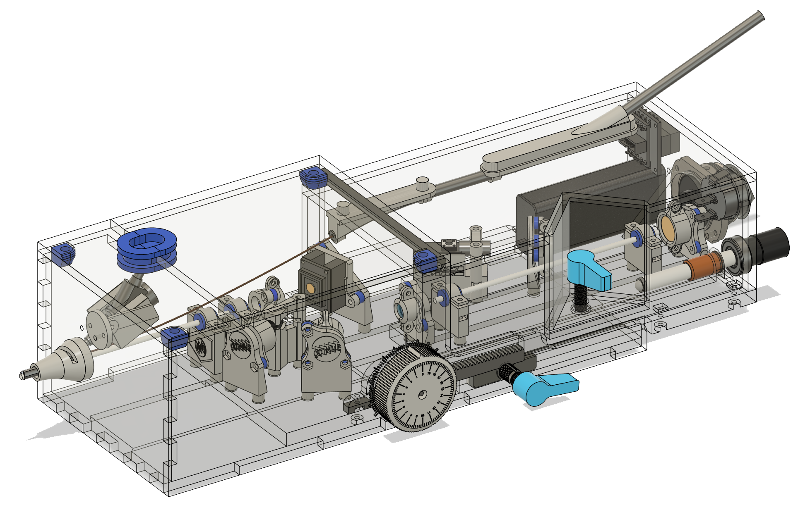
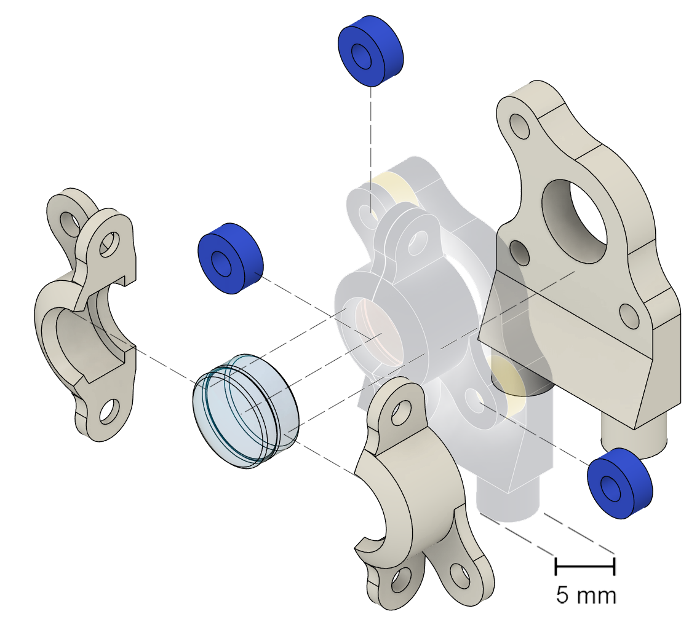
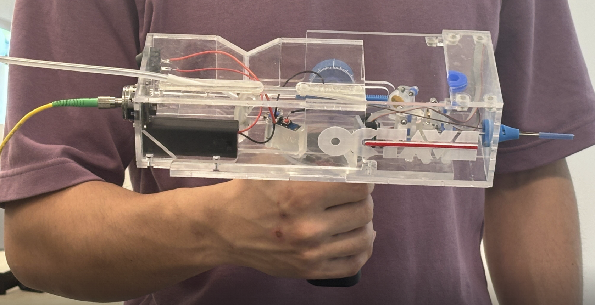
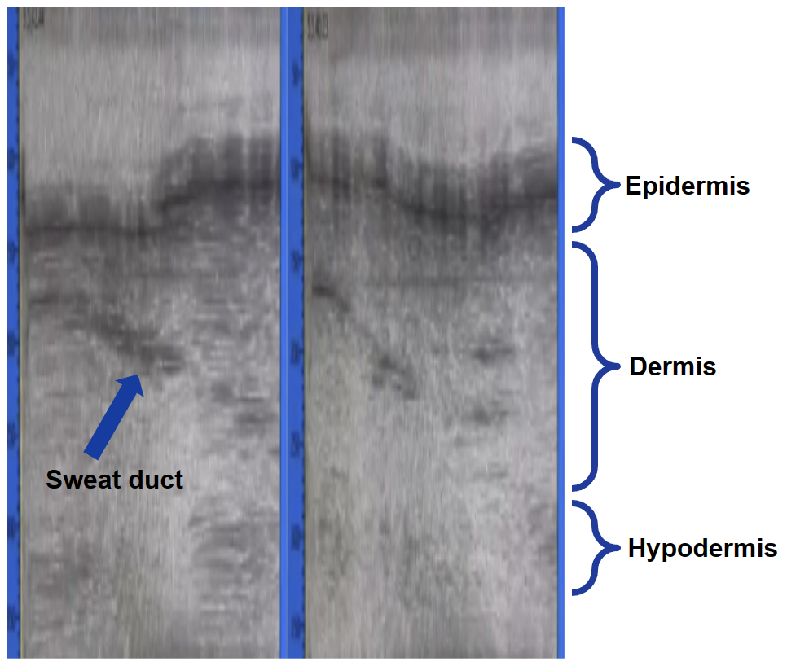

{kind=link}

Complete CAD Assembly
Full probe: integrated optics, adjustable stage, front assembly, and case — the result of team-wide design.
A handheld scanner that sees and measures the middle ear to diagnose hearing loss
NIH DEBUT Challenge 2nd Place Winner • UC Riverside Senior Design • Dr. H. Park, Dr. W. Dong
Conductive hearing loss affects tens of millions of people, but doctors have no good tool to see what inside the ear is actually broken. OCTAVE is a handheld probe that combines two jobs: high-resolution imaging of the middle-ear structures and measurement of how the tiny ear bones vibrate in response to sound. That lets a clinician pinpoint the problem in one visit, without exploratory surgery.
A 1310 nm light source feeds a Michelson interferometer (the OCT engine) miniaturized into a ~0.6 kg probe. A MEMS mirror scans the beam; a GRIN lens focuses it through a standard otoscope tip. Doppler vibrometry measures ear-bone motion, and a built-in fiberscope shows the doctor where they're aiming — all through a custom real-time software interface.
Lead optomechanical designer on a 5-person team. I designed and 3D-printed the miniaturized mounts for every optical part, engineered the two-stage adjustable probe, and built the front "patient interface" that makes it safe and usable in a real ear. I also tuned the SLA printing to hit sub-degree accuracy and verified optical alignment.

Full probe: integrated optics, adjustable stage, front assembly, and case — the result of team-wide design.

Clamp–insulator–base system for each optic, SLA-printed for fine alignment on the cheap.

The aligned optical stages inside a case with adjustment knobs — one-handed, clinic-ready.

Resolves three skin layers on a fingertip — proof the whole optical system works as one.
{kind=link}
{kind=link}
{kind=link}